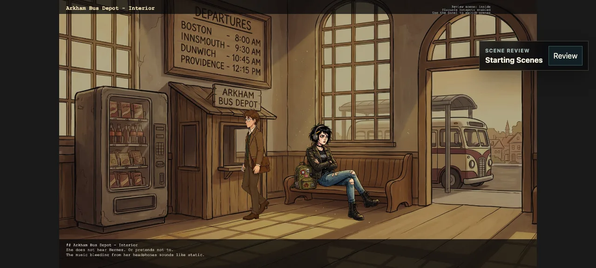
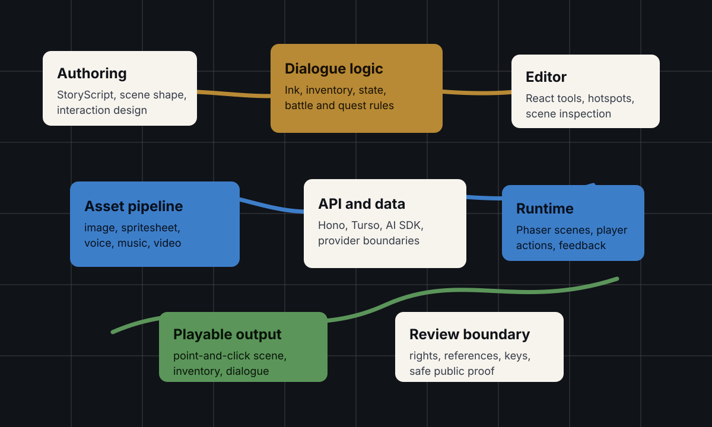

Problem
I want to make games efficiently and, eventually, build a game studio around Anima.
I'm also experimenting with letting players explore freely, try things I haven't scripted and go somewhere I haven't designed, with AI generating new scenes in real time.
What I Built
The engine runs on Phaser, the editor is built in React, and each player's world is saved in a database behind a Hono API.
- Story and dialogueStoryScript, my own language for writing the story, and a dialogue system based on StoryScript and Ink.
- ScenesTools for creating scenes and detecting their walkable areas.
- CharactersCharacters generated as video, cut out with a difference matte and turned into animated sprites.
Built on StoryScript
StoryScript is a plain-text language I designed for point-and-click adventures. You write the scenes, the dialogue, the things you can click and the inventory much like a screenplay. A language model can write it and a person can read it, and the engine runs it directly with no compile step. It also runs without graphics, so a story can be tested before any art exists, and an AI playtester can play through it. The Shadow Over Innsmouth script is about 6,500 lines across four acts. StoryScript has its own case study.
The Game and the Editor

The Art Pipeline
Each character starts as a walk cycle generated as video with Veo 3.1.

How the cutout works
The video model puts the character on a flat grey background. Standard background removal leaves halos around the character and mistakes the shadows on skin for background. So I use a difference matte. The frames are packed into grids, and an image model, Nano Banana, redraws each grid twice, once on pure white and once on pure black. A pixel that looks the same in both versions belongs to the character. A pixel that changes is background, so it becomes transparent. Comparing the two versions gives a clean edge, even on skin.
The default video decoder drops the transparency, so I decode with the VP9 alpha decoder. Then I find the frame where the walk loops cleanly, crop every frame to the same box so the character doesn't jitter, and pack the frames into a spritesheet the engine loads.
Technical Decisions
- In the experimental open world, most clicks only change the narration, the voice and the character's animation. A new image is made when something visible changes. Generated places are cached and shared.
- Language models are bad at pixel positions, so the floor and the perspective come from perception models. SAM 3 finds the floor, a depth model finds the horizon, and a vision model only answers whether the character looks right standing in the scene.
- The character's size comes from the depth of the scene. Every step is planned onto the floor so the feet don't slide, and the character can walk behind furniture and props.
- I test the walking without opening the game in a browser. A test harness replays 139 walks across ten scenes and checks every frame.
Demo
The demo covers the open world, the editor and the parts of Shadow Over Innsmouth built so far. The unreleased story text and the generated voices stay private.